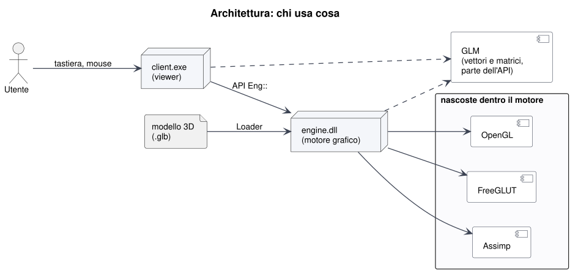
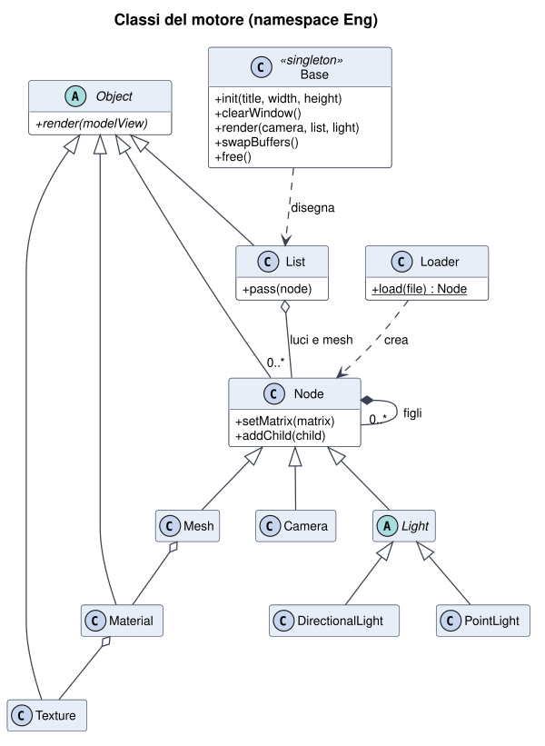
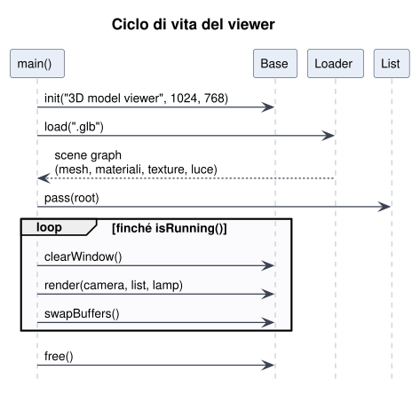
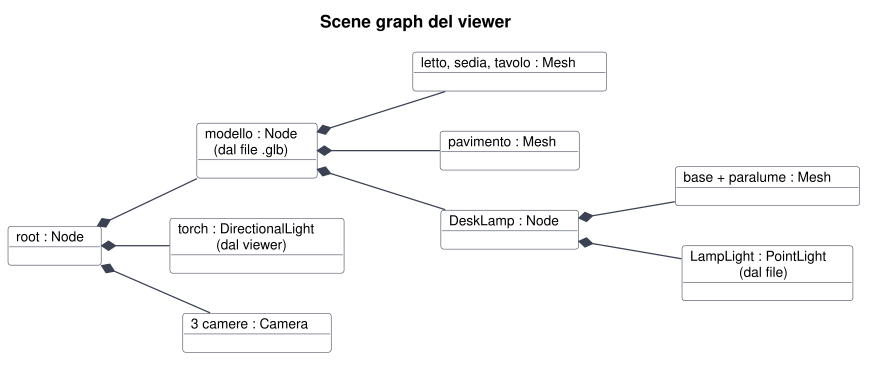
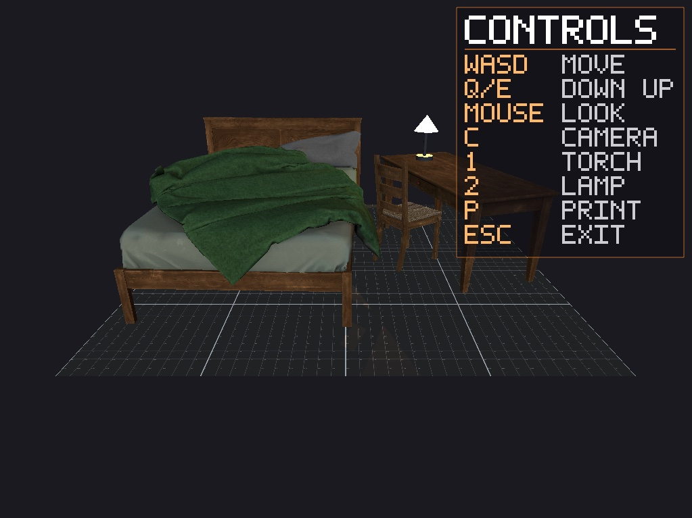
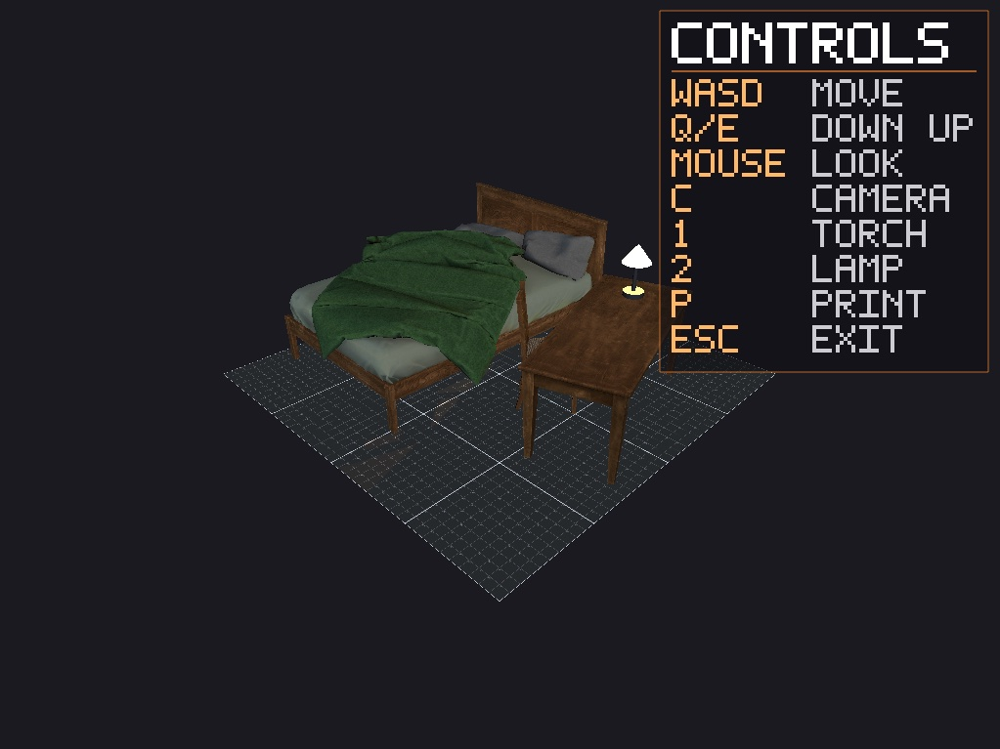
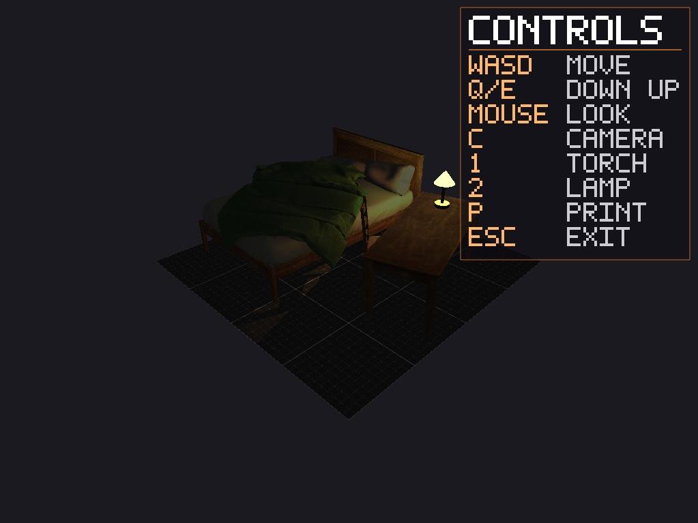
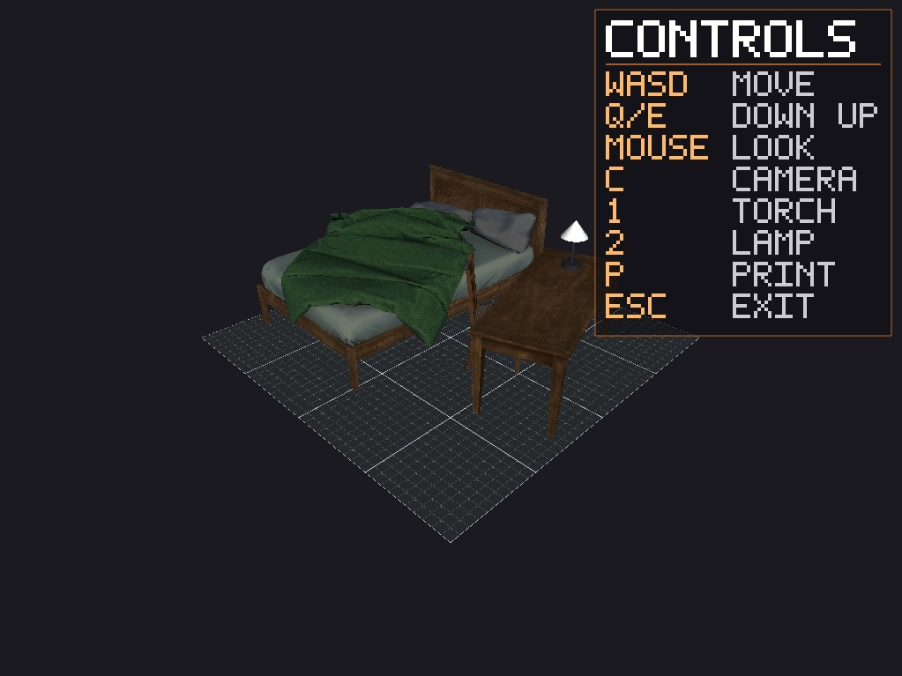
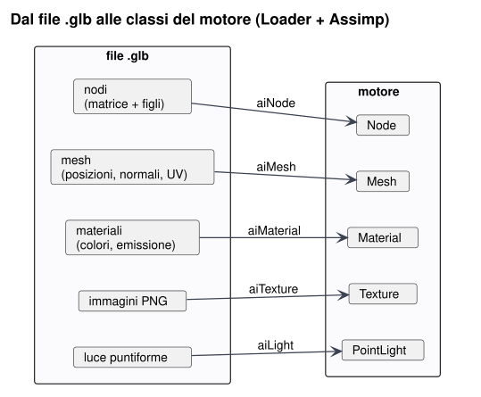

Due programmi: il motore (engine.dll) e il viewer (client.exe). Il viewer parla
solo con l'API Eng::. OpenGL, FreeGLUT e Assimp restano dentro il motore; GLM invece fa parte dell'API
(Series 1), perché le funzioni pubbliche usano glm::vec3 e glm::mat4.

init, clearWindow, render, swapBuffers, free.render().
Lo stesso schema del main() richiesto dalla Series 3: inizializza, ciclo
pulisci → disegna → scambia i buffer, chiudi.

Il Loader crea il ramo modello, compresa la luce della lampada che sta nel file. Il viewer aggiunge solo la torcia (luce dinamica che segue la camera) e le tre camere.

“Bedroom Furniture Set – Game Ready”: letto, scrivania e sedia su un pavimento. Noi abbiamo aggiunto una lampada da scrivania con il paralume luminoso e la sua luce. Le immagini sono catturate dal nostro viewer.




| Dato | Valore |
|---|---|
| Mesh | 4 (letto + mobili, pavimento, base e paralume della lampada) |
| Triangoli | 14 837, molto sotto il limite di 100k del requisito sui 30 FPS |
| Materiali e texture | 4 materiali, 4 immagini PNG 1024×1024 dentro il file |
| Luci | 1 luce puntiforme LampLight nel paralume (arancio, intensità 2,5) |
| Dimensioni | circa 4 × 1,3 × 4 m (scala reale, in metri) |
| Autore e licenza | General of Thailand (sketchfab.com/Melonpolygons), CC BY 4.0, modificato |
È glTF 2.0 in versione binaria, uno standard aperto del Khronos Group (lo stesso gruppo che cura OpenGL), pensato apposta per caricare scene 3D pronte per il disegno in tempo reale. Un solo file, in tre parti:
| Parte | Contenuto | Nel nostro file |
|---|---|---|
| Intestazione | 12 byte: la parola glTF, la versione (2), la lunghezza totale | 4,45 MB in tutto |
| Blocco JSON | la descrizione della scena: nodi, mesh, materiali, texture, luci | 5,7 kB |
| Blocco BIN | i dati veri: vertici, normali, coordinate texture, immagini PNG | 4,45 MB (quasi tutto immagini) |
Contenuto del nostro file:
| Elemento | Quanti | Dettaglio |
|---|---|---|
| Nodi | 9 | ognuno con traslazione, rotazione, scala e figli |
| Mesh | 3 (4 dopo Assimp) | letto + mobili, pavimento, lampada (la lampada ha 2 materiali, quindi diventa 2 mesh) |
| Materiali | 4 | base della lampada, paralume (con emissione), pavimento, letto e mobili (con speculare) |
| Immagini | 4 PNG | colore del pavimento; colore, normali, occlusione/rugosità del letto |
| Luci | 1 | luce puntiforme LampLight (estensione standard KHR_lights_punctual) |
Node: il Loader copia l'albero così
com'è.| Formato | Geometria | Materiali | Texture | Nodi | Luci | Note |
|---|---|---|---|---|---|---|
| .glb | sì | sì | sì, dentro il file | sì | sì | standard aperto, un solo file |
| .ply | sì | no | no | no | no | per scansioni 3D (punti, colori per vertice) |
| .obj + .mtl | sì | sì | file separati | no | no | niente nodi né matrici |
| .fbx | sì | sì | sì | sì | sì | formato proprietario Autodesk |
Loader::load fa leggere il file ad Assimp (con aiProcess_Triangulate e
aiProcess_GenSmoothNormals), poi converte ogni parte nella classe del motore corrispondente.

| Nel file .glb | Assimp | Nel motore |
|---|---|---|
| nodo: traslazione, rotazione, scala, figli | aiNode (matrice 4×4 per righe) | Node: matrice trasposta (GLM è per colonne), stessi figli |
| mesh: posizioni, normali, coordinate UV | aiMesh (solo triangoli) | Mesh::build: triangoli in una display list |
| materiale: colore base, emissione, speculare | aiMaterial | Material: colori ambiente, diffuso, speculare, emissione |
| immagine PNG nel blocco BIN | texture incorporata (aiTexture, ancora compressa) | Texture::load: decodifica dalla memoria con stb_image |
luce KHR_lights_punctual sul nodo LampLight | aiLight con lo stesso nome del nodo (colore × intensità, attenuazione 1/d²) | PointLight figlia di quel nodo |
Il viewer poi riconosce le parti importanti senza nomi scritti nel codice:
isFlat()): riceve l'ombra;| Requisito del corso | Come lo soddisfa il nostro .glb |
|---|---|
| caricare un modello da un file esterno | un solo file, letto da Loader::load |
| proprietà dei materiali | 4 materiali con colore, speculare ed emissione |
| sorgenti di luce | la luce LampLight arriva dal file e diventa la luce statica |
| texture mapping | 4 immagini PNG dentro il file + coordinate UV per ogni vertice |
| due luci di tipo diverso, una statica e una dinamica | puntiforme dal file (statica) + direzionale del viewer (dinamica) |
| più di 30 FPS sotto i 100k triangoli | 14 837 triangoli |
| ombre o riflessi su una superficie piana | pavimento piatto nel file, ombra proiettata dalla lampada |
| scene graph nel motore | 9 nodi con matrici e figli, copiati uno a uno |